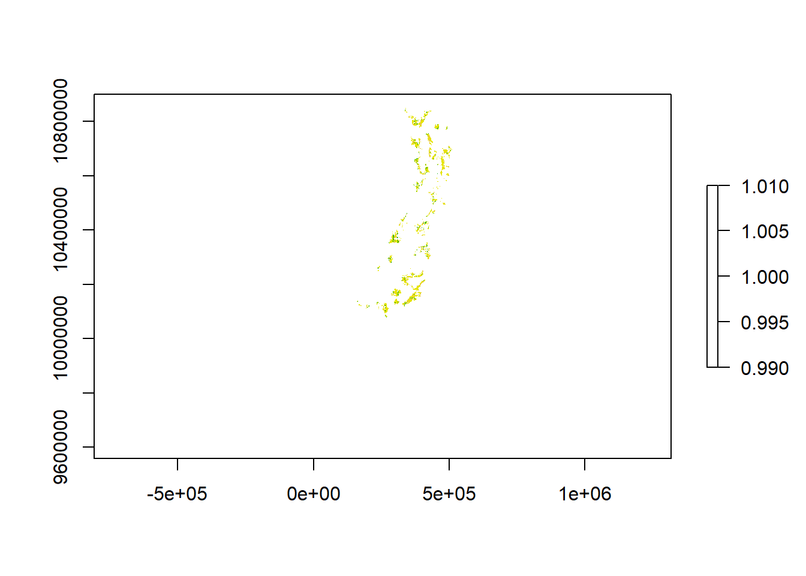
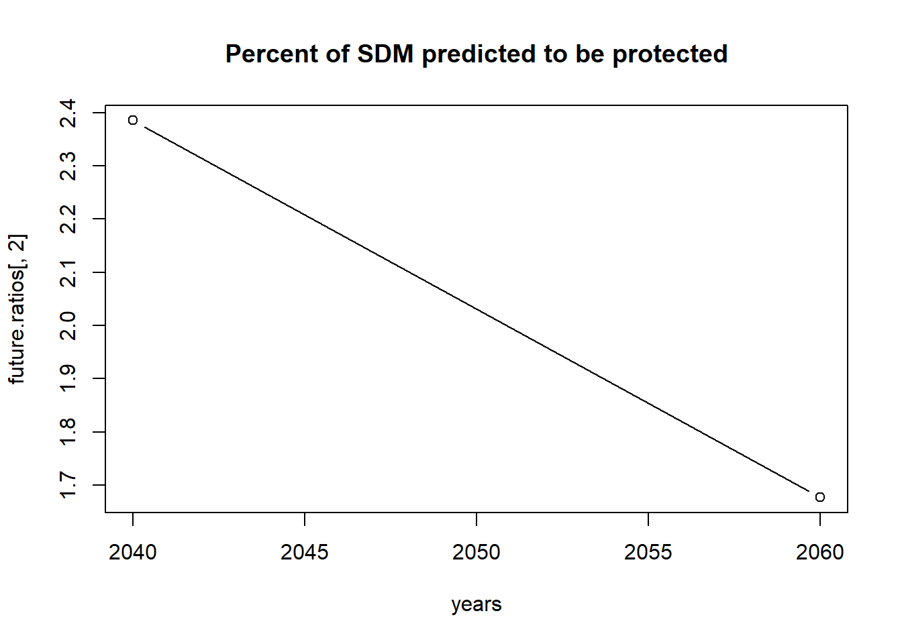
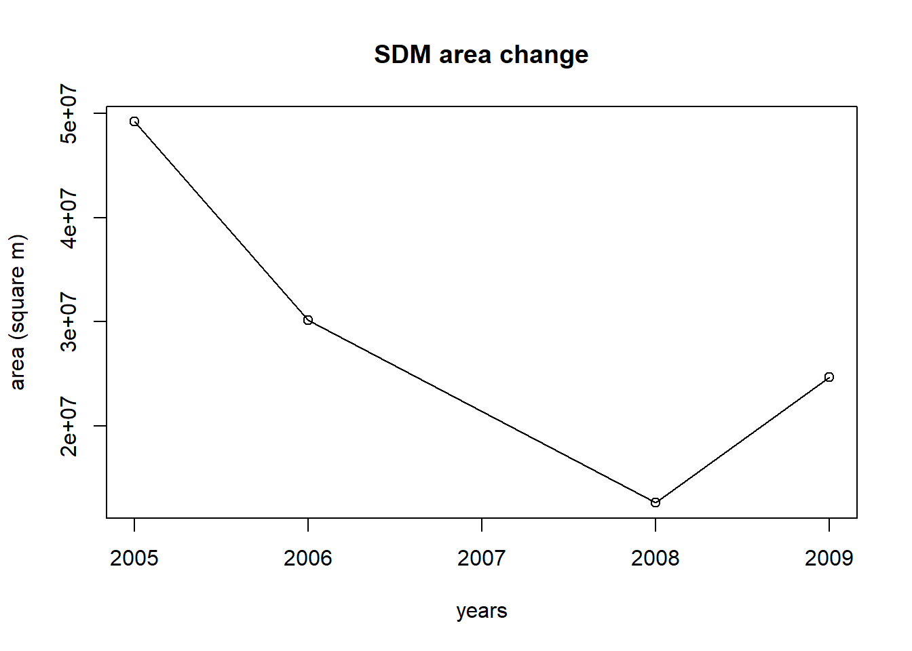

Translating a species’ current distribution into meaningful conservation metrics in a repeatable and transparent way to inform conservation planning and decision-making remains an outstanding issue in conservation biology. By using a species distribution model (SDM), as well as landscape requirements (e.g., forest cover), we can mask the output of an SDM to only those areas likely to be suitable to estimate the species’ current range (e.g., in maskRangeR. From these reduced model outputs, upper bounds of IUCN metrics regarding area of occupancy (AOO) and extent of occurrence (EOO) can be calculated to inform the assessment of a species’ conservation status, in combination with other information [1]. In addition, we can calculate the proportion of a species’ range size that is protected, that is threatened, or that is associated with different land cover types. If past or future model projections or geospatial data on habitat for masking are available, we can also calculate and visualize change in these metrics over time. These change metrics can then inform IUCN red-listing and forward-thinking conservation planning. We provide an example below to calculate these metrics for the olinguito [2] using the changeRangeR package. Beyond single species, we can combine models from multiple species to calculate community-level metrics of conservation interest to learn more about this see our multi-species vignettes (see Biodiversity metrics vignette).
[1] IUCN Standards and Petitions Committee. 2022. Guidelines for Using the IUCN Red List Categories and Criteria. Version 15.1. Prepared by the Standards and Petitions Committee. Available from: https://www.iucnredlist.org/resources/redlistguidelines
[2] Helgen, K.M., Miguel Pinto, C., Kays, R., Helgen, L.E., Tsuchiya, M. T. N., Quinn, A., Wilson, D.E., Maldonado, J.E. (2013) Taxonomic revision of the olingos (Bassaricyon), with description of a new species, the Olinguito. Zookeys, 324, 1-83. https://doi.org/10.3897/zookeys.324.5827.
[2] Galante, P. J., Chang Triguero, S., Paz, A., Aiello‐Lammens, M., Gerstner, B. E., Johnson, B. A., … & Blair, M. E. (2023). changeRangeR: An R package for reproducible biodiversity change metrics from species distribution estimates. Conservation Science and Practice, 5(1), e12863. https://conbio.onlinelibrary.wiley.com/doi/full/10.1111/csp2.12863
Load the packages you’ll need
library(changeRangeR)
library(raster)
library(sf)
library(dplyr)Calculating range size is as simple as multiplying the number of cells in a binary raster by the resolution (in km) squared. This method is useful when your raster is projected. For unprojected rasters, see ?raster::area
p <- raster(paste0(system.file(package="changeRangeR"), "/extdata/DemoData/SDM/Forest_suitable_projected_coarse.tif"))
# Check that your raster is projected in meters
crs(p)## Coordinate Reference System:
## Deprecated Proj.4 representation:
## +proj=utm +zone=18 +south +datum=WGS84 +units=m +no_defs
## WKT2 2019 representation:
## PROJCRS["unknown",
## BASEGEOGCRS["unknown",
## DATUM["World Geodetic System 1984",
## ELLIPSOID["WGS 84",6378137,298.257223563,
## LENGTHUNIT["metre",1]],
## ID["EPSG",6326]],
## PRIMEM["Greenwich",0,
## ANGLEUNIT["degree",0.0174532925199433],
## ID["EPSG",8901]]],
## CONVERSION["UTM zone 18S",
## METHOD["Transverse Mercator",
## ID["EPSG",9807]],
## PARAMETER["Latitude of natural origin",0,
## ANGLEUNIT["degree",0.0174532925199433],
## ID["EPSG",8801]],
## PARAMETER["Longitude of natural origin",-75,
## ANGLEUNIT["degree",0.0174532925199433],
## ID["EPSG",8802]],
## PARAMETER["Scale factor at natural origin",0.9996,
## SCALEUNIT["unity",1],
## ID["EPSG",8805]],
## PARAMETER["False easting",500000,
## LENGTHUNIT["metre",1],
## ID["EPSG",8806]],
## PARAMETER["False northing",10000000,
## LENGTHUNIT["metre",1],
## ID["EPSG",8807]],
## ID["EPSG",16118]],
## CS[Cartesian,2],
## AXIS["(E)",east,
## ORDER[1],
## LENGTHUNIT["metre",1,
## ID["EPSG",9001]]],
## AXIS["(N)",north,
## ORDER[2],
## LENGTHUNIT["metre",1,
## ID["EPSG",9001]]]]# find the number of cells that are not NA
pCells <- ncell(p[!is.na(p)])
# Convert the raster resolution to km^s
Resolution <- (res(p)/1000)^2
# Multiply the two
area <- pCells * Resolution
paste0("area = ", area[1], " km^2")## [1] "area = 93545.7956265521 km^2"IUCN’s EOO is defined as the area contained within the shortest imaginary (continuous) boundary drawn to encompass all the known (current) occurrences of a taxon, excluding vagrant localities. This measure may exclude discontinuities or disjunctions within the overall distribution of a taxon (e.g., large areas of unsuitable habitat, but see AOO below). The EOO is typically measured by drawing a minimum convex polygon (MCP, also called a convex hull) around occurrence localities, but this may include many large areas of obviously unsuitable or unoccupied habitat, making a convex hull around a thresholded SDM more appropriate. It is important to follow the guidelines of the relevant IUCN SSC SG when contributing EOO or AOO measurements to enable consistency across assessments. You can read more about IUCN definitions here. In changeRangeR, users can calculate IUCN’s EOO via two options 1) MCP/convex hull around occurrence localities, 2) MCP/convex hull area of thresholded (MTP) SDM.
Calculate the extent of occupancy around occurrence localities
locs <- read.csv(paste0(system.file(package="changeRangeR"), "/extdata/DemoData/locs/10KM_thin_2017.csv"))
# Look at the first 5 rows. Not that there are three columns: Species, Longitude, Latitude
head(locs)## long lat species X X.1
## 1 -76.5815 3.5009 Bassaricyon neblina NA 1
## 2 -75.4988 6.2083 Bassaricyon neblina NA 3
## 3 -78.7491 -0.4550 Bassaricyon neblina NA 4
## 4 -76.1152 6.3753 Bassaricyon neblina NA 7
## 5 -76.4453 1.9270 Bassaricyon neblina NA 8
## 6 -76.8830 2.5330 Bassaricyon neblina NA 10# Create a minimum convex polygon around the occurrences
eoo <- mcp(locs[,1:2])## WARNING: this minimum convex polygon has no coordinate reference system.# Define the coordinate reference system as unprojected
crs(eoo) <- "+proj=longlat +ellps=WGS84 +datum=WGS84 +no_defs"
area <- area(eoo)/1000000
## area is measured in meters^2
paste0(area, " km ^2")## [1] "91721.7270949235 km ^2"Calculate the extent of occupancy from a thresholded SDM
p <- raster(paste0(system.file(package="changeRangeR"), "/extdata/DemoData/SDM/Climatically_suitable_projected_coarse.tif"))
# Threshold of the minimum training presence
thr <- min(values(p), na.rm=T)
p[p<thr] <- NA
p.pts <- rasterToPoints(p)
eooSDM <- mcp(p.pts[,1:2])## WARNING: this minimum convex polygon has no coordinate reference system.aeoosdm <- area(eooSDM)/1000000
paste0(aeoosdm, " meters ^2")## [1] "306002.704624902 meters ^2"Within the calculated EOO area above, users can calculate the sum of 2x2 km grid cells to calculate the upper bounds of IUCN’s area of occupancy or AOO. AOO is intended to account for unsuitable or unoccupied habitats that may be included in the EOO calculations. AOO should be calculated with a standard grid cell size of 2 km (a cell area of 4 km2) in order to ensure consistency and comparability of results in IUCN assessments. In changeRanger, users can calculate AOO either 1) with occurrence points, 2) from the pre-masked thresholded SDM, and 3) from the masked thresholded SDM. It is suggested that users reproject ranges to an equal area projection for more accurate area-based calculations.
Calculating the areas of occupancy measured in grid cells where the resolution is 2km
Calculate the area of occupancy that contains occurrence records
p <- raster(paste0(system.file(package="changeRangeR"), "/extdata/DemoData/SDM/Climatically_suitable_projected_coarse.tif"))
# Using unfiltered records
locs <- read.csv(paste0(system.file(package="changeRangeR"), "/extdata/DemoData/locs/All_localities_30n.csv"))
locs <- locs[,1:2]
p[!is.na(p)] <- 1
AOOlocs <- AOOarea(r = p, locs = locs)
print(AOOlocs)## $area
## Metric km2
## 1 AOO with records 120
##
## $aooRaster
## class : RasterLayer
## dimensions : 728, 318, 231504 (nrow, ncol, ncell)
## resolution : 0.01666667, 0.01666667 (x, y)
## extent : -79.87219, -74.57219, -3.986526, 8.14681 (xmin, xmax, ymin, ymax)
## crs : +proj=longlat +ellps=WGS84 +towgs84=0,0,0,0,0,0,0 +no_defs
## source : memory
## names : Climatically_suitable_projected_coarse
## values : 1, 1 (min, max)
##
##
## $aooPixels
## class : RasterLayer
## dimensions : 728, 318, 231504 (nrow, ncol, ncell)
## resolution : 0.01666667, 0.01666667 (x, y)
## extent : -79.87219, -74.57219, -3.986526, 8.14681 (xmin, xmax, ymin, ymax)
## crs : +proj=longlat +ellps=WGS84 +towgs84=0,0,0,0,0,0,0 +no_defs
## source : memory
## names : layer
## values : 1, 30 (min, max)p <- raster(paste0(system.file(package="changeRangeR"), "/extdata/DemoData/SDM/Climatically_suitable_projected_coarse.tif"))
# Convert to binary
p[!is.na(p)] <- 1
AOO <- AOOarea(r = p)
print(AOO)## $area
## Metric km2
## 1 AOO 106916
##
## $aooRaster
## class : RasterLayer
## dimensions : 574, 248, 142352 (nrow, ncol, ncell)
## resolution : 2315.769, 2315.769 (x, y)
## extent : -31701.99, 542608.8, 9565472, 10894724 (xmin, xmax, ymin, ymax)
## crs : +proj=utm +zone=18 +south +datum=WGS84 +units=m +no_defs
## source : memory
## names : Climatically_suitable_projected_coarse
## values : 1, 1 (min, max)
##
##
## $aooPixels
## NULLp <- raster(paste0(system.file(package="changeRangeR"), "/extdata/DemoData/SDM/Forest_suitable_projected_coarse.tif"))
# Convert to binary
p[!is.na(p)] <- 1
AOO <- AOOarea(r = p)
print(AOO)## $area
## Metric km2
## 1 AOO 86876
##
## $aooRaster
## class : RasterLayer
## dimensions : 574, 248, 142352 (nrow, ncol, ncell)
## resolution : 2315.769, 2315.769 (x, y)
## extent : -31701.99, 542608.8, 9565472, 10894724 (xmin, xmax, ymin, ymax)
## crs : +proj=utm +zone=18 +south +datum=WGS84 +units=m +no_defs
## source : memory
## names : Forest_suitable_projected_coarse
## values : 1, 1 (min, max)
##
##
## $aooPixels
## NULLChoice of model threshold can have downstream implications for calculations of metrics such as IUCN’s EOO and AOO, when calculated using SDM inputs. changeRanger includes a function for users to choose model threshold
Determining the best threshold and area for the SDM. For each increment of 0.01 between a user-specified threshold and the maximum SDM prediction value, the prediction is thresholded to this value to make a binary raster. This raster is then converted to points, which are used to delineate a trial MCP. Each trial MCP is spatially intersected with the original MCP (based on the occurrence coordinates) and the original occurrence points. The Jaccard similarity index is calculated to determine geographic similarity between the trial and observed MCP. The trial MCP is also spatially intersected with the original occurrence points to determine how many were omitted. The “best” MCP is the one that has the highest JSI and also omits the least original occurrence points.
p <- raster(paste0(system.file(package="changeRangeR"), "/extdata/DemoData/SDM/olinguitoSDM_coarse.tif"))
xy <- read.csv(paste0(system.file(package="changeRangeR"), "/extdata/DemoData/locs/10KM_thin_2017.csv"))
ch.orig <- mcp(xy[,1:2])## WARNING: this minimum convex polygon has no coordinate reference system.thr <- 0.3380209
sf_use_s2(FALSE)## Spherical geometry (s2) switched offSDMeoo <- mcpSDM(p = p, xy = xy[,1:2], ch.orig = ch.orig, thr = thr)## although coordinates are longitude/latitude, st_intersection assumes that they
## are planar## although coordinates are longitude/latitude, st_intersection assumes that they
## are planar
## although coordinates are longitude/latitude, st_intersection assumes that they
## are planar
## although coordinates are longitude/latitude, st_intersection assumes that they
## are planar
## although coordinates are longitude/latitude, st_intersection assumes that they
## are planar
## although coordinates are longitude/latitude, st_intersection assumes that they
## are planar
## although coordinates are longitude/latitude, st_intersection assumes that they
## are planar
## although coordinates are longitude/latitude, st_intersection assumes that they
## are planar
## although coordinates are longitude/latitude, st_intersection assumes that they
## are planar
## although coordinates are longitude/latitude, st_intersection assumes that they
## are planar
## although coordinates are longitude/latitude, st_intersection assumes that they
## are planar
## although coordinates are longitude/latitude, st_intersection assumes that they
## are planar
## although coordinates are longitude/latitude, st_intersection assumes that they
## are planar
## although coordinates are longitude/latitude, st_intersection assumes that they
## are planar
## although coordinates are longitude/latitude, st_intersection assumes that they
## are planar
## although coordinates are longitude/latitude, st_intersection assumes that they
## are planar
## although coordinates are longitude/latitude, st_intersection assumes that they
## are planar
## although coordinates are longitude/latitude, st_intersection assumes that they
## are planar
## although coordinates are longitude/latitude, st_intersection assumes that they
## are planar
## although coordinates are longitude/latitude, st_intersection assumes that they
## are planar
## although coordinates are longitude/latitude, st_intersection assumes that they
## are planar
## although coordinates are longitude/latitude, st_intersection assumes that they
## are planar
## although coordinates are longitude/latitude, st_intersection assumes that they
## are planar
## although coordinates are longitude/latitude, st_intersection assumes that they
## are planar
## although coordinates are longitude/latitude, st_intersection assumes that they
## are planar
## although coordinates are longitude/latitude, st_intersection assumes that they
## are planar
## although coordinates are longitude/latitude, st_intersection assumes that they
## are planar
## although coordinates are longitude/latitude, st_intersection assumes that they
## are planar
## although coordinates are longitude/latitude, st_intersection assumes that they
## are planar
## although coordinates are longitude/latitude, st_intersection assumes that they
## are planar
## although coordinates are longitude/latitude, st_intersection assumes that they
## are planar
## although coordinates are longitude/latitude, st_intersection assumes that they
## are planar
## although coordinates are longitude/latitude, st_intersection assumes that they
## are planar
## although coordinates are longitude/latitude, st_intersection assumes that they
## are planar
## although coordinates are longitude/latitude, st_intersection assumes that they
## are planar
## although coordinates are longitude/latitude, st_intersection assumes that they
## are planar
## although coordinates are longitude/latitude, st_intersection assumes that they
## are planar
## although coordinates are longitude/latitude, st_intersection assumes that they
## are planar
## although coordinates are longitude/latitude, st_intersection assumes that they
## are planar
## although coordinates are longitude/latitude, st_intersection assumes that they
## are planar
## although coordinates are longitude/latitude, st_intersection assumes that they
## are planar
## although coordinates are longitude/latitude, st_intersection assumes that they
## are planar
## although coordinates are longitude/latitude, st_intersection assumes that they
## are planar
## although coordinates are longitude/latitude, st_intersection assumes that they
## are planar
## although coordinates are longitude/latitude, st_intersection assumes that they
## are planar
## although coordinates are longitude/latitude, st_intersection assumes that they
## are planar
## although coordinates are longitude/latitude, st_intersection assumes that they
## are planar
## although coordinates are longitude/latitude, st_intersection assumes that they
## are planar
## although coordinates are longitude/latitude, st_intersection assumes that they
## are planar
## although coordinates are longitude/latitude, st_intersection assumes that they
## are planar
## although coordinates are longitude/latitude, st_intersection assumes that they
## are planar
## although coordinates are longitude/latitude, st_intersection assumes that they
## are planar
## although coordinates are longitude/latitude, st_intersection assumes that they
## are planar
## although coordinates are longitude/latitude, st_intersection assumes that they
## are planar
## although coordinates are longitude/latitude, st_intersection assumes that they
## are planar
## although coordinates are longitude/latitude, st_intersection assumes that they
## are planar
## although coordinates are longitude/latitude, st_intersection assumes that they
## are planar
## although coordinates are longitude/latitude, st_intersection assumes that they
## are planar# Check the output
SDMeoo## $jsi
## [1] 0.0520949123 0.0520999611 0.0523725493 0.0524454042 0.0526794692
## [6] 0.0563632017 0.0588234360 0.0588312191 0.0589303597 0.0589689001
## [11] 0.0592527595 0.0593836749 0.0594161268 0.0598221225 0.0600188602
## [16] 0.0601101614 0.0603700060 0.0603805727 0.0603805727 0.0609056693
## [21] 0.0609251320 0.0612313249 0.0619024619 0.0620456869 0.0621879378
## [26] 0.0621998926 0.0621998926 0.0628490252 0.0630336531 0.0633911471
## [31] 0.0635252300 0.0635441324 0.0638238938 0.0639645525 0.0640185440
## [36] 0.0644597243 0.0646646319 0.0647971887 0.0698927310 0.0700242843
## [41] 0.0703382357 0.0707539347 0.0713006332 0.0717607409 0.0718935971
## [46] 0.0725529982 0.0732138637 0.0732789739 0.0743536101 0.0751226010
## [51] 0.0008306471 0.0008515118 0.0007272680 0.0015238333 0.0010513026
## [56] 0.0009064591 0.0000000000 0.0000000000
##
## $thr
## [1] 0.3380209 0.3480209 0.3580209 0.3680209 0.3780209 0.3880209 0.3980209
## [8] 0.4080209 0.4180209 0.4280209 0.4380209 0.4480209 0.4580209 0.4680209
## [15] 0.4780209 0.4880209 0.4980209 0.5080209 0.5180209 0.5280209 0.5380209
## [22] 0.5480209 0.5580209 0.5680209 0.5780209 0.5880209 0.5980209 0.6080209
## [29] 0.6180209 0.6280209 0.6380209 0.6480209 0.6580209 0.6680209 0.6780209
## [36] 0.6880209 0.6980209 0.7080209 0.7180209 0.7280209 0.7380209 0.7480209
## [43] 0.7580209 0.7680209 0.7780209 0.7880209 0.7980209 0.8080209 0.8180209
## [50] 0.8280209 0.8380209 0.8480209 0.8580209 0.8680209 0.8780209 0.8880209
## [57] 0.8980209 0.9080209
##
## $ov.pts
## [1] 18 18 18 18 18 18 18 18 18 18 18 18 18 18 18 18 18 18 18 18 18 18 18 18 18
## [26] 18 18 18 18 18 18 18 18 18 18 18 18 18 18 18 18 18 18 18 18 18 18 18 18 18
## [51] 1 1 1 1 1 1 0 0
##
## $best.fit
## class : SpatialPolygons
## features : 1
## extent : -83.85417, -72.0625, -4.5625, 11.14583 (xmin, xmax, ymin, ymax)
## crs : +proj=longlat +datum=WGS84 +no_defs
##
## $best.fit.ind
## [1] 50The function ratioOverlap allows changeRangeR users to calculate the proportion overlap of a species’ range with other features, for example different land cover classes, habitat types, or ecoregions, different types of threats (any user-defined georeferenced polygon). In this example, we calculate the proportion of the Olinguito distribution that overlaps with protected areas in Colombia. NOTE: the protected areas can be separated by any fields’ categories in a shapefile’s attribute table. NOTE: When overlapping a species’s range with another raster they must be on the same reasolution before performing the overlap.
r <- raster(paste0(system.file(package="changeRangeR"), "/extdata/DemoData/SDM/Forest_suitable_projected_coarse.tif"))
shp <- readRDS(file.path(system.file(package="changeRangeR"), "extdata/DemoData/shapefiles", "WDPA_COL_olinguito_simp.rds"))
# set the projections to match
shp <- spTransform(shp, CRSobj = crs(r))
# View the fields
colnames(shp@data)## [1] "NAME" "ORIG_NAME" "DESIG" "DESIG_ENG" "DESIG_TYPE"# Pick the field you are interested in
field <- "DESIG_ENG"
category <- unique(shp$DESIG_ENG)
ratio.Overlap <- ratioOverlap(r = r, shp = shp, field = field, category = category, subfield = F)
# Look at the range that is protected
plot(ratio.Overlap$maskedRange[[1]])
# The proportion of the range that is protected
ratio.Overlap$ratio## [1] "Percentage of range within Specially Protected Area (Cartagena Convention), World Heritage Site (natural or mixed), Integrated Management Regional Districts, Regional Natural Parks, National Natural Park, Regional Protective Forest Reserves, Civil Society Nature Reserve, National Protective Forest Reserves, Soil Conservation Districts, Fauna and Flora Sanctuary, Integrated Management National Districts, Fauna Sanctuary, Recreation Area, Flora Sanctuary is 11.523%"For users that have information on past environmental conditions or future scenarios, they can calculate changes in metrics over time and view a line graph of those changes. For example, the change in percentage of forest within species’ range over time.
# Load shapefile
PA <- readRDS(file.path(system.file(package="changeRangeR"), "extdata/DemoData/shapefiles/vn", "VN_NRs_simp.rds"))
# load raster
r <- stack(list.files(path = paste0(system.file(package="changeRangeR"), "/extdata/DemoData/SDM/franLang"), pattern = "\\.tif$", full.names = T))
# Assume PA's will not change, so make list of current protectes areas
futures <- list(PA, PA)
# create list of rasters for example
r <- raster::unstack(r)
# supply names for r and futures
r.names <- c("BCC.2040.ssp2", "BCC.2060.ssp2")
futures.names <- c("PA1", "PA2")
# Define shapefile field and category
field <- "DESIG_ENG"
category <- "All"
# Calculate the overlap for each time period
future.ratios <- futureOverlap(r = r, futures = futures, field = field, category = category, futures.names = futures.names, r.names = r.names)
## Plot
# Create list of years from which landcover comes
years <- c(2040, 2060)
# Plot
plot(x = years, y = future.ratios[,2], type = "b", main = "Percent of SDM predicted to be protected")
To see how SDM range size can change with suitable forest cover through time, supply environmental rasters and a suitability threshold as well as a binary SDM. The environmental rasters must be in the same coordinate reference system at the SDM.
binaryRange <- raster::raster(paste0(system.file(package="changeRangeR"), "/extdata/DemoData/SDM/Climatically_suitable_projected_coarse.tif"))
rStack <- raster::stack(list.files(path = paste0(system.file(package="changeRangeR"), "/extdata/DemoData/MODIS"), pattern = "\\.tif$", full.names = T))
rStack <- raster::projectRaster(rStack, binaryRange, method = "bilinear")
threshold <- 50.086735
SDM.time <- envChange(rStack = rStack, binaryRange = binaryRange, threshold = threshold, bound = "lower")
years <- c("2005", "2006", "2008", "2009")
SDM.time$Area## Area
## X2005_olinguito_Modis_coarse 49212417
## X2006_olinguito_Modis_coarse 30135108
## X2008_olinguito_Modis_coarse 12627891
## X2009_olinguito_Modis_coarse 24672208plot(y = SDM.time$Area, x = years, main = "SDM area change", ylab = "area (square m)")
lines(y = SDM.time$Area, x = years)